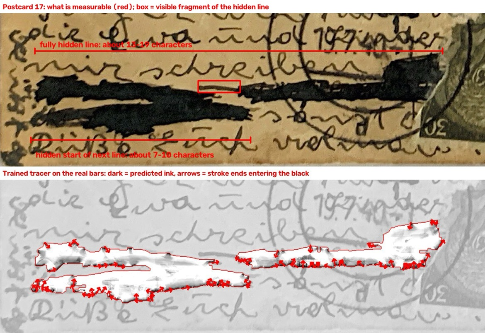
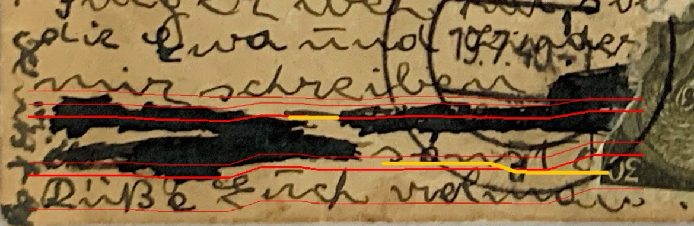
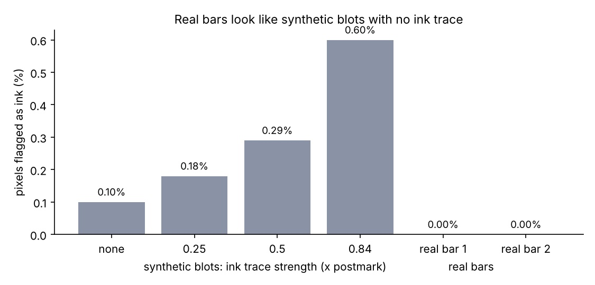
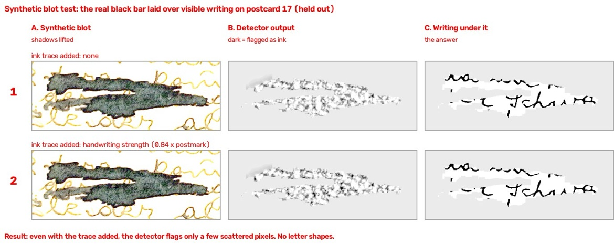
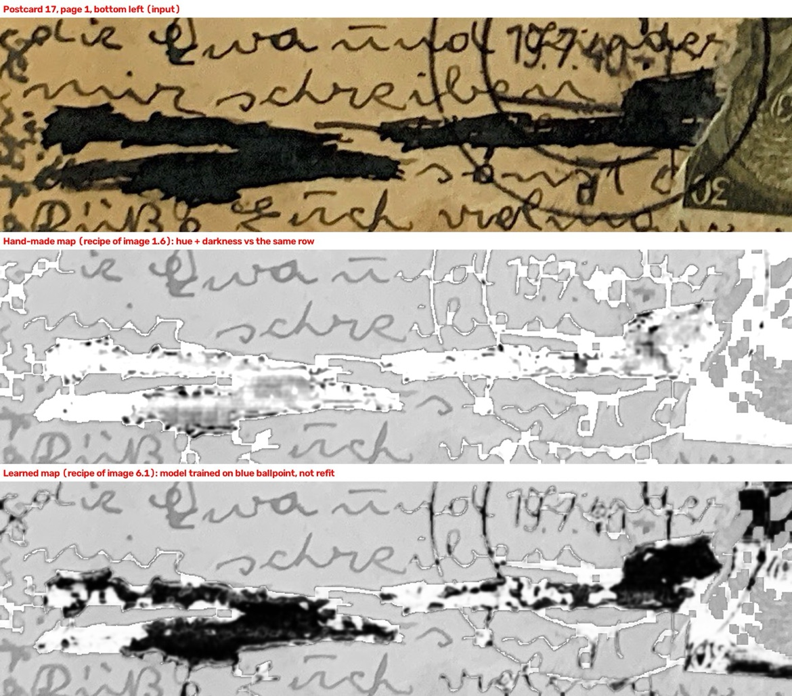
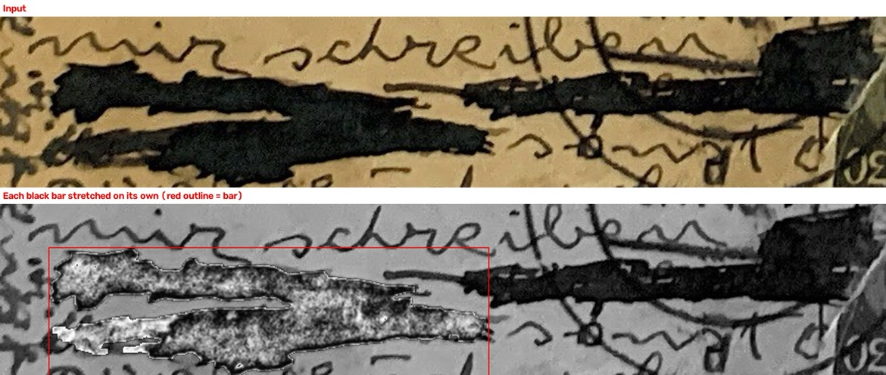
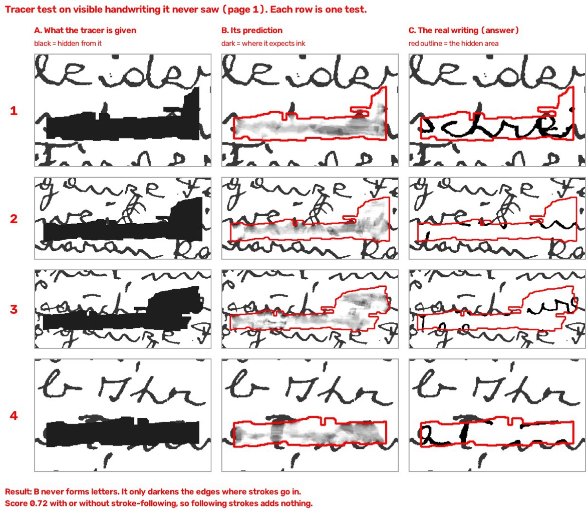
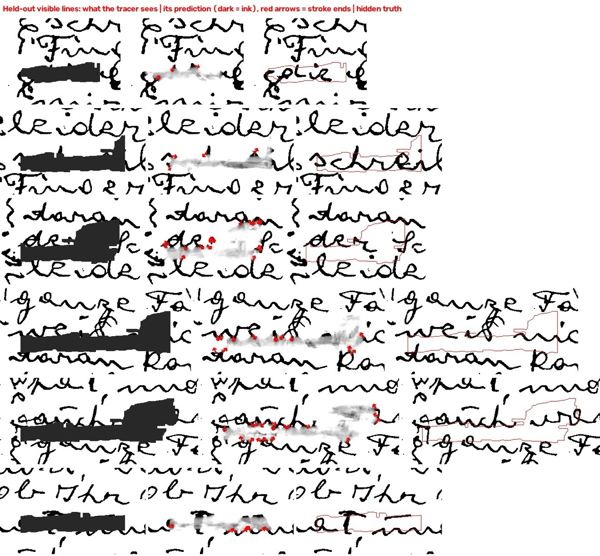
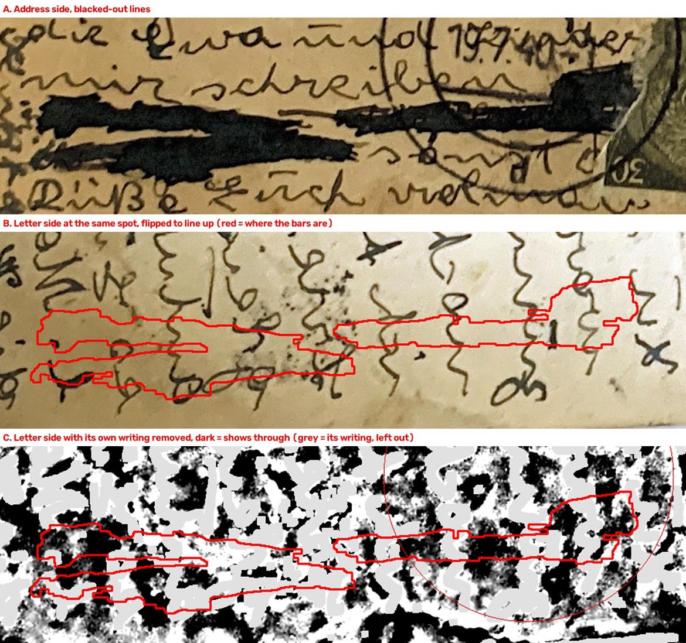

Postcard 17: black bars, what is measurable, what is not
Postcard: Ch. Willner, Wien II Taborstrasse 67, to Jakob Willner, 94 Sheriff Street, New York City. Postmark 19 July 1940, censor number 1517. Scan 17 in the postcard survey, message side, lower left.
What was blacked out: heavy black ink, fully opaque, deliberate obliteration by the writer's own pen, covering about two lines of handwriting, just above the closing line. This is not the blue wash blot in Letter 39, and it is not the blue scribble in the pangram test. It is a different ink, and a different problem.
Who did these tests: Claude, October 2026, figures supplied by Moshe. This page files Claude's figures and verdict, with the length estimates kept separate from any reading. Ozzy did not run these black-bar tests. The pangram work, blue ballpoint scribble, is a separate test, and its signal does not transfer here, as the figures below show.
What is measurable, and nothing more
- Fully hidden line: about 16 to 17 characters.
- Hidden start of the next line: about 7 to 10 characters.
- One visible fragment, boxed in red in the middle of the upper bar, in the figure below. The fragment alone does not identify the hidden words.
- Visible lines around the bars, for context only: above, in part, "mir schreiben", below, in part, a closing line beginning with a capital D, with "ich" visible. Those visible words are not the hidden words.


Real bars give no ink trace, synthetic blots do
A detector that flags a faint ink trace under a synthetic blue scribble flags nothing under the real black bars.
| Test | Pixels flagged as ink |
|---|---|
| Synthetic blot, no ink trace added | 0.10% |
| Synthetic blot, trace 0.25x postmark strength | 0.18% |
| Synthetic blot, trace 0.5x | 0.29% |
| Synthetic blot, trace 0.84x | 0.60% |
| Real bar 1, Postcard 17 | 0.00% |
| Real bar 2, Postcard 17 | 0.00% |


Hand-made map and learned map, both fail on the real bars
The hand-made map is hue plus darkness vs the same row, the recipe that found a signal under blue scribble. The learned map is a model trained on blue ballpoint, not refit for black ink. Neither forms letters under the real bars.


Tracer test: it never forms letters, even where it should
The tracer was tested on visible handwriting it never saw, with parts hidden by synthetic black bars, so its prediction could be checked against the real writing under the cover.


Show-through does not reveal the hidden line either

How this differs from the pangram test
Under blue ballpoint scribble, original stroke pixels were darker and more violet than scribble-only pixels in the same row, pixel AUC 0.85 to 0.93, and a learned map ranked middle letters first 7 of 18 times, but no word ranked first. That signal depends on translucent blue ink. Under black ink, the signal is zero in the chart above, and the learned blue-ballpoint map, not refit, gives blobs. Do not apply pangram thresholds or pangram ranks to Postcard 17.
Sources and files
- Postcard identification: postcard survey, scan 17, Ch. Willner, 19 July 1940, censor 1517, in
postcard-redaction-candidates.mdin this repo. - Figures on this page: Claude, October 2026, supplied as uploads, copied to
img/postcard17/in this repo, with original captions preserved in the figure captions above. - This page was added 28 October 2026, local working tree only, not yet pushed, pending Moshe's review.